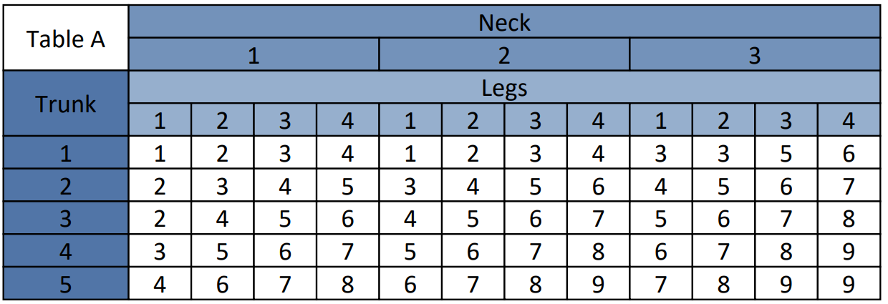
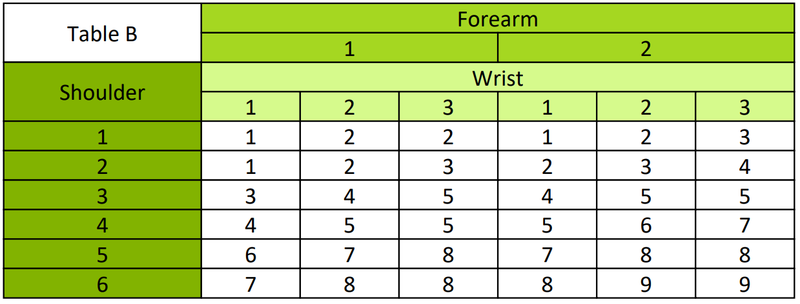
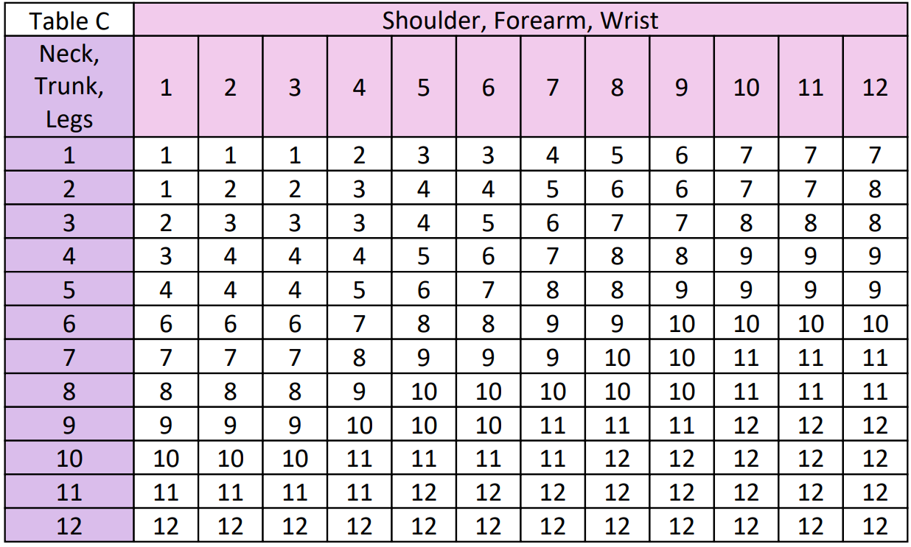

How is REBA rated?
Neck, Trunk, Legs
·Neck
oNeck bend
§0 < α < 20 – 1 point
§20 < α – 2 points
§α < 0 – 2 points
oNeck twist
§Neck is not twisted – 0 points
§Neck is twisted – 1 point
oNeck side-bend
§Neck is not side-bending – 0 points
§Neck is side-bending – 1 point
Maximum 3 points.
·Trunk
oTrunk bend
§α < -20 – 3 points
§-20 < α < -5 – 2 points
§-5 < α < 5 – 1 point
§5 < α < 20 – 2 points
§20 < α < 60 – 3 points
§60 < α – 4 points
oTrunk twist
§Trunk is not twisted – 0 points
§Trunk is twisted – 1 point
oTrunk side-bend
§Trunk is not side-bending – 0 points
§Trunk is side-bending – 1 point
Maximum 5 points.
·Legs
oLegs position
§Legs and feet supported and balanced – 1 point
§Legs and feet not supported or balanced – 2 points
oLeg flexion (look at the largest bend of the leg)
§α < 30 – 0 points
§30 < α < 60 – 1 point
§60 < α – 2 points
Left arm, right arm.
·Upper arm
oUpper arm elevation (if arm is supported - minus 1 point)
§-20 < α < 20 - 1 point
§α < -20 - 2 points
§20 < α < 45 - 2 points
§45 < α < 90 - 3 points
§90 < α - 4 points
oUpper arm abduction
§Upper arm is not abducted - 0 points
§Upper arm is abducted - 1 point
oShoulder elevation
§Shoulder is not raised - 0 points
§Shoulder is raised - 1 point
·Forearm
oForearm bend
§60 < α < 100 - 1 point
§0 < α < 60 - 2 points
§100 < α – 2 points
·Wrist
oWrist elevation
§-15 < α < 15 – 1 point
§15 < α – 2 points
§α < -15 – 2 points
oWrist deviation
§Wrist is not deviated – 0 points
§Wrist is deviated to one side or the other – 1 point
- To assess the position of the neck, torso, legs, there is table B, according to which a score is selected (Fig. 18). Additional scores are added to the score from the table. Load less than 5 kg: 0, load from 5 kg to 10 kg: +1, load more than 10 kg: +2. An additional score is also added if there is either a shock increase in force, or a sharp change in posture, or high repetition.

Figure 18 – REBA Table À
- To evaluate the hand position, there is table B, according to which a score is selected (Fig. 19). To set a further score, the hand with the worst score is taken. Additional points are added to the score from the table. Manual grip is good with handles: +0, manual grip is acceptable: +1, manual grip is unacceptable but possible: +2, manual grip is dangerous: +3.

Figure 19 – REBA Table B
- To obtain the final result of the REBA method, table C is used (Fig. 20). Additional points are added to the score from the table. If the pose is static (> 1 min): +1, if the pose is repeated more than 4 times per minute: +1, if the pose changes quickly and widely or the base is unstable: +1.

Figure 20 – REBA Table C